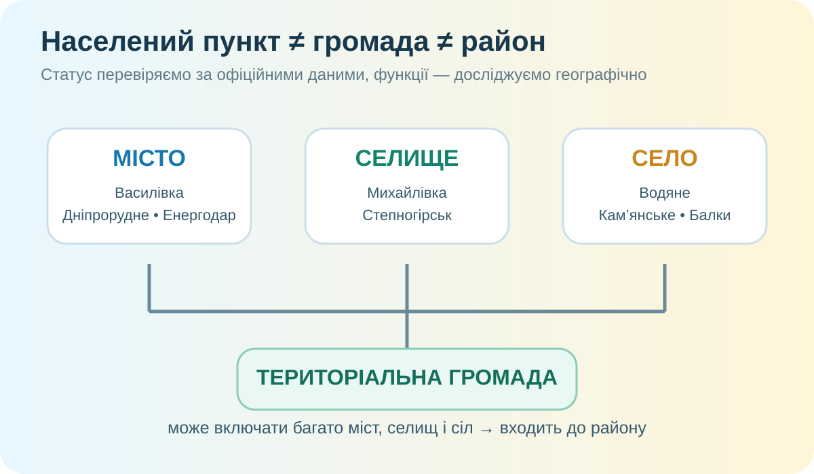

1. Гіпотеза: місто видно здалеку?
Сформулюйте свою стартову ознаку, за якою Ви б відрізняли місто, селище і село.

2. Просторовий доказ: де зосереджені поселення?
Знайдіть на карті Василівку, Дніпрорудне, Енергодар, Кам’янку-Дніпровську. Який природний або господарський чинник пояснює розміщення кожного?
Чому поселення тяжіють до транспортних шляхів, води, родовищ, робочих місць і вузлів послуг? Назвіть два механізми.
3. Інтерактив: вгадайте статус — а потім перевірте себе
Натисніть варіант. Тут спеціально підібрані назви, які провокують помилку.
4. Дослідження свого району: не карта, а система поселень
у Василівському районі за актуальною довідковою сторінкою порталу «Децентралізація».
міських, селищних і сільських.
Василівка, Дніпрорудне, Енергодар, Кам’янка-Дніпровська.
Кейс 1. Василівська громада
Вона має 18 населених пунктів, адміністративний центр — місто Василівка, площа — близько 721,5 км². Чому «міська громада» не означає «територія складається лише з міста»?
Кейс 2. Дніпрорудненська громада
У громаді лише 3 населені пункти: місто Дніпрорудне і два села. Порівняйте її просторову структуру з Василівською.


Фото: Wikimedia Commons, вільні ліцензії. Адміністративні дані: портал «Децентралізація». Чисельність населення на порталі використовується лише як довідкова базова величина; в умовах війни, окупації та переміщення вона не дорівнює фактичній кількості людей, що нині проживають на місці.
5. Теорія після дослідження: що саме ми щойно довели?
Населений пункт
Компактно заселена територія з усталеною забудовою та офіційною назвою. В Україні виділяють міста, селища і села.
Статус
Адміністративно-правова характеристика. Він не визначається лише чисельністю населення чи виглядом забудови.
Громада
Не «ще один населений пункт», а територіальна одиниця місцевого самоврядування, яка може включати багато поселень.
6. CER: чи можна визначити статус поселення за зовнішнім виглядом?
7. Мініаудит власного населеного пункту
- Відкрийте електронний підручник і опрацюйте тему про населені пункти (орієнтир — наступний параграф після адміністративно-територіального устрою, у друкованому виданні нумерація може відрізнятися).
- Знайдіть свій населений пункт на OpenStreetMap або офіційній карті громади.
- Запишіть: статус, громаду, район, область і 2 чинники, що вплинули на його розміщення.
- Рівень +: порівняйте його з іншим поселенням громади й поясніть одну відмінність у функціях або плануванні.
8. Перевірка — 10 балів
Спочатку введіть дані. Тест відкриється після заповнення всіх трьох полів.
Для перевірки фактів
Портал «Децентралізація»: Василівський район, Василівська, Дніпрорудненська, Кам’янсько-Дніпровська, Енергодарська та Водянська громади; OpenStreetMap; Wikimedia Commons; електронний підручник «Географія. 8 клас» Т. Гільберг, А. Довгань, І. Савчук (Генеза).